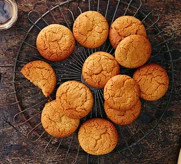

Ginger Biscuits

Description:
Use fresh and ground ginger to make these moreish biscuits. They're perfect served with a cuppa for afternoon tea, or as a treat anytime!
Quick preparation info:
Prep:20 mins Cook:10 mins Easy Makes 20 biscuits
Ingredients:
- 100g salted butter
- 75g light broun soft sugar
- 1 tbsp grated fresh ginger
- 100g golden syrup
- 250g self-raising flour
- 1 1/2 tbsp ground ginger
- 1 tsp bicarbonate of soda
- 1 small egg yolk
Steps:
- Heat the oven to 190C/170C fan/gas 5. Line two large baking trays with baking parchment. In a saucepan over a low heat, melt the butter, sugar, fresh ginger and golden syrup and leave to cool.
- Mix the flour, ground ginger and bicarbonate of soda together in a bowl with a wooden spoon. Gradually stir in the cooled sugar mixture and the egg yolk and knead briefly to make a dough.
- Roll the dough into 20g balls and put on the prepared baking trays with 3cm between each to allow for spreading. Bake for 8-10 mins until golden brown. Leave to cool on the trays for a min, then transfer to a cooling rack to cool completely.
Go Back